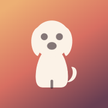

Kenny's Day · Icon assets
Companion, ready to drop in.
The full iOS icon set plus the transparent in-app mark. Everything below is in the app-icons/ folder.
App icon · size ramp
AppIcon.appiconset
Square & opaque — iOS rounds them. Drop the set straight into Xcode.

180 · @3x
120 · @2x
87 · settings
60 · spotlight
40 · notify
In-app mark · transparent SVG
kenny-mark.svg
One file, currentColor body — colour it from CSS. Pre-filled cream & plum versions included.
What's in the folder
AppIcon.appiconset/ — 15 PNGs + Contents.json (Xcode-ready)
kenny-mark.svg — in-app dog, currentColor
kenny-mark-cream.svg · kenny-mark-plum.svg — pre-filled
kenny-icon.svg — rounded full-colour (favicon / marketing)
kenny-icon-square.svg — square vector master
README.md — usage notes